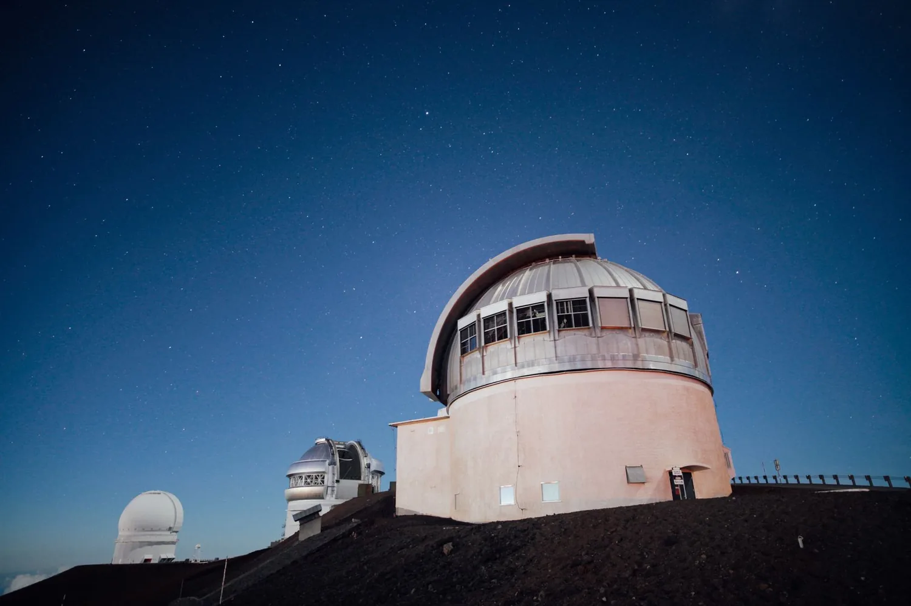

Parc Astronòmic del Montsec
Complejo situado en el corazón de una Reserva Starlight, uno de los mejores cielos de Europa para observar estrellas. El Centre d'Observació de l'Univers ofrece experiencias guiadas por astrónomos tanto de día como de noche, con telescopios y un planetario para descubrir el sol, la luna y el cielo nocturno. Un plan diferente que despierta la curiosidad científica de toda la familia.
Camí del Coll d'Ares, s/n, 25691 Àger, Lleida Visitar web oficial